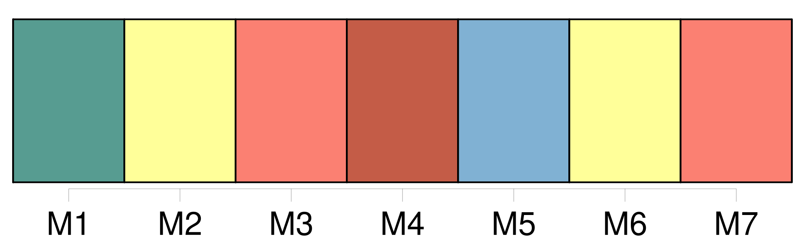
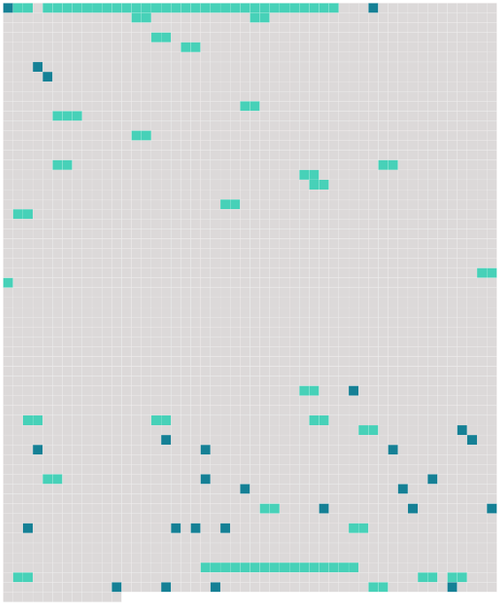

Longueur nb maillons : 55 mentions |
 |
[Singe]
Bien que [leur] ressemblance avec l'Homme ait toujours frappé les esprits, la science a mis de nombreux siècles à prouver le lien étroit qui existe entre [ces animaux] et l'espèce humaine. Au sein des primates, [les singes] forment un infra-ordre monophylétique, si l'on y inclut le genre Homo, nommé Simiiformes et qui se divise entre les singes du « Nouveau Monde » ( Amérique centrale et méridionale ) et ceux de l'« Ancien Monde » ( Afrique et Asie tropicales ). [1 phrases]
Même s'il ne fait plus de doute aujourd'hui que « l'Homme est [un singe] comme les autres », le terme est majoritairement utilisé pour parler des animaux sauvages et évoque un référentiel culturel, littéraire et artistique qui exclut l'espèce humaine. [1 phrases]
Les adjectifs se rapportant [au singe] sont simien et simiesque. [2 phrases]
En français, les différentes sortes de [singes] sont désignées par des noms plus ou moins précis comme babouin, chimpanzé, gibbon, gorille, macaque, orang-outan, ouistiti, etc. Contrairement aux oiseaux, il n'existe pas, en français, d'organisme reconnu qui propose des noms uniques pour les espèces de [singe] [5 phrases]
Historique, découverte et classification [1 phrases] Dans son Histoire des animaux, il décrit [le « singe] » ( ou « pithèque », probablement le magot ), le « cèbe » ( le cercopithèque ) et le « cynocéphale » ( le babouin ), qui « ont une nature intermédiaire entre celle de l'homme et celle des quadrupèdes ». [1 phrases] Pour le naturaliste romain du Ier siècle Pline l'Ancien, [les singes] sont les animaux qui, « par leur conformation, ressemblent le plus à l'homme ». [4 phrases]
Il constate en effet que « de tous les animaux [le singe] ressemble le plus à l'homme pour les viscères, les muselés, les artères, les nerfs et la forme des os ».
Bestiaires médiévaux [1 phrases] Le motif [du singe] est souvent repris dans les enluminures, les fresques et les sculptures, et symbolise la folie et la vanité de l'Homme.
Leur représentation iconographique figure invariablement un collier et une chaîne, laquelle est parfois reliée à un billot de bois pour limiter les mouvements de [l'animal] dans la pièce. [2 phrases]
Première nomenclature [des singes]
Dans l'Histoire naturelle, il établit une « nomenclature [des singes] » qui sépare les animaux de l'Ancien et du Nouveau Monde. [10 phrases] Dans la dixième édition de son Systema Naturae11, il introduit le genre Simia qui regroupe [tous les singes] ainsi qu'une espèce de tarsier. [15 phrases] C'est ainsi que dès les années 1830, la classification scientifique [des singes] atteint, dans [ses] grandes lignes, l'ordre qui prévaut encore au XXIe siècle et recense les principaux groupes d'espèces connus aujourd'hui. [2 phrases]
L'affirmation du fait que l'homme est [un singe] est aujourd'hui banale, certains titres comme « L'homme est [un singe] comme les autres » soulignent cet état de fait.
Classification moderne et phylogénie [1 phrases]
Mythologie et religion Dans la Roue de l'existence tibétaine, [il] symbolise la Conscience versatile, celle qui, liée au monde sensible, se disperse d'un objet à l'autre. Réputé être l'ancêtre des Tibétains, qui [le] considèrent comme un Bodhisattva, [il] est, selon Si Yeou Ki, le fils du Ciel et de la Terre. [Il] accompagne donc Xuanzang ( Hiun-Tsang ) dans son voyage à la recherche des Livres saints du Bouddhisme. [Il] y apparaît comme le compagnon facétieux, magicien taoïste de grande envergure. [3 phrases] Cette croyance se retrouve dans le panthéon égyptien, où [le singe] est le scribe savant, celui qui possède la connaissance de la réalité. [Il] note la parole de Ptah, le dieu créateur, comme celle d'Anubis, qui pèse l'âme des morts. [Il] apparaît en Égypte comme le magicien suprême, artiste, ami des fleurs, des jardins, des fêtes, prestidigitateur puissant capable de lire les plus mystérieux hiéroglyphes. [Il] est donc l'animal psychopompe par excellence, reliant la Terre et le Ciel. [Il] y est représenté comme celui qui gouverne les heures, le maître du temps privilégié. [2 phrases]
Pour les Éyptiens, [le singe] est un grand initié [qui] doit être évité dans l'autre monde où [il] pêche les âmes dans le réseau de [ses] filets. [2 phrases] Chez les indiens Bororo, Claude Levi-Strauss rapporte qu' [il] est le héros civilisateur, l'inventeur de la technique, le malin magicien [qui] masque [ses] pouvoirs et [son] intelligence rusée.
Il convient de ne pas rire de lui car [le Singe] aura le dessus. [4 phrases]
Aspects symboliques
Signe astrologique [1 phrases]
Singes de la sagesse [Ses] techniques sont imprévisibles. [Ses] parades sont acrobatiques. [Ses] frappes sont très courtes et très rapides, dans les points vitaux. Les grimaces [du singe] y sont imitées.
Aussi, [il] est utilisé pour stimuler le cœur, en travaillant sur l'amplitude et la vitesse. |
 |
Il est possible de télécharger la ressource sur la page Ortolang |
Si vous avez des questions ou vous voyez des erreurs, merci d'envoyer un mail à silvia.federzoni89@gmail.com |